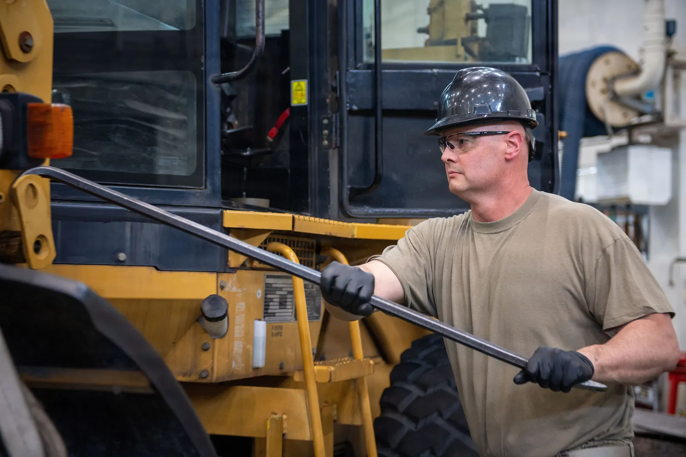
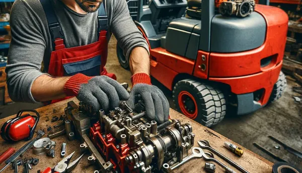
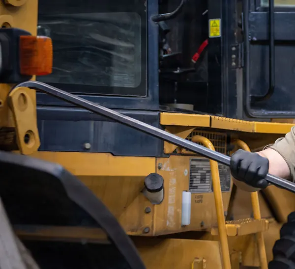
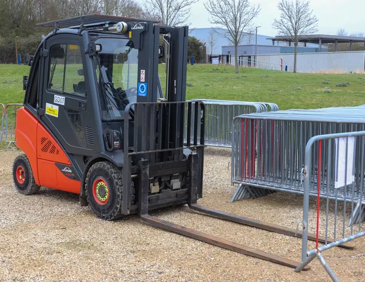
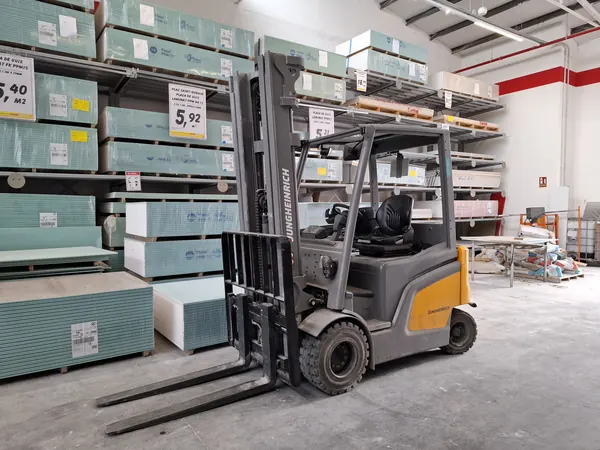
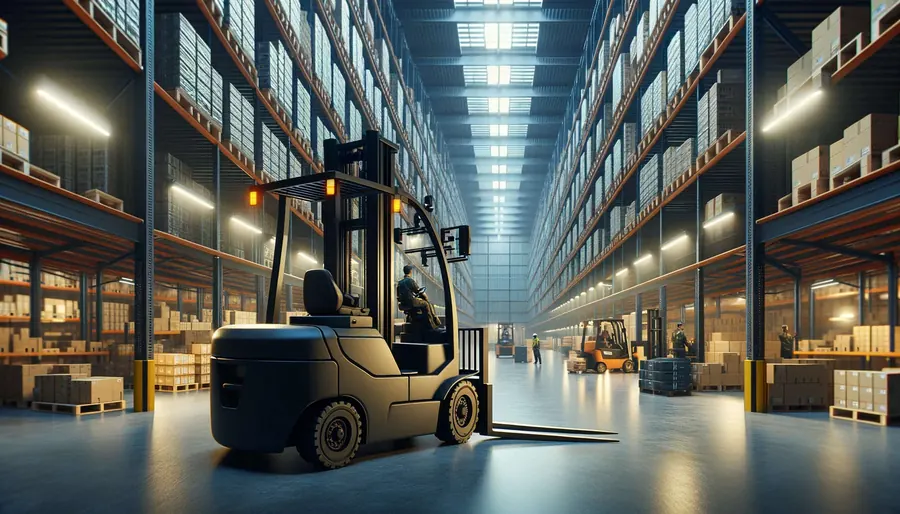

Serwis wózków widłowych
Przeglądy techniczne, konserwacje i naprawy po awariach, na miejscu u klienta. Wózki elektryczne i spalinowe różnych marek.

Przeglądy, naprawy i sprawy UDT wózków widłowych, podnośników, ładowarek teleskopowych i suwnic. Przyjeżdżamy na miejsce w Lesznie, Gostyniu, Rawiczu i okolicy.
Serwisujemy wózki różnych marek i modeli, maszyny budowlane i urządzenia dźwigowe. Gdy potrzebny jest zastępczy albo dodatkowy wózek, mamy też wynajem i sprzedaż.
Przeglądy techniczne, konserwacje i naprawy po awariach, na miejscu u klienta. Wózki elektryczne i spalinowe różnych marek.

Kontrole stanu technicznego, naprawy hydrauliki i elektryki, przeglądy ładowarek teleskopowych, inspekcje i modernizacje suwnic.

Koparki i ładowarki teleskopowe: przeglądy, naprawy pogwarancyjne, modernizacje dopasowane do pracy na budowie.

Wózki elektryczne, spalinowe i wysokiego składowania, od kilku dni do wielu miesięcy. Serwis przez cały okres najmu.
Linde, Jungheinrich, Still, Toyota/BT

Nowe i używane wózki widłowe dobrane do pracy w Państwa magazynie lub na placu. Doradzimy wybór i zajmiemy się serwisem po zakupie.

Wózek, który stoi, zatrzymuje magazyn i produkcję. Dlatego serwisujemy na miejscu: bez transportu sprzętu i bez czekania w kolejce w warsztacie.
Wózki widłowe, podnośniki i suwnice podlegają dozorowi technicznemu. Pomagamy przejść przez wymagania i procedury Urzędu Dozoru Technicznego tak, żeby sprzęt i dokumenty były w porządku przed badaniem.
Obsługujemy firmy z Leszna, Gostynia, Jarocina, Rawicza, Krotoszyna, Borku, Kobylina i Milicza.
Mobilny serwis obejmuje południową Wielkopolskę. Każda miejscowość ma na nowej stronie własną zakładkę z ofertą, żeby klienci z okolicy łatwo trafili do Państwa z Google.
Praktyczne wskazówki dla firm, które korzystają z wózków widłowych na co dzień.
Proszę opisać sprzęt i problem. Oddzwonimy i ustalimy termin przyjazdu.